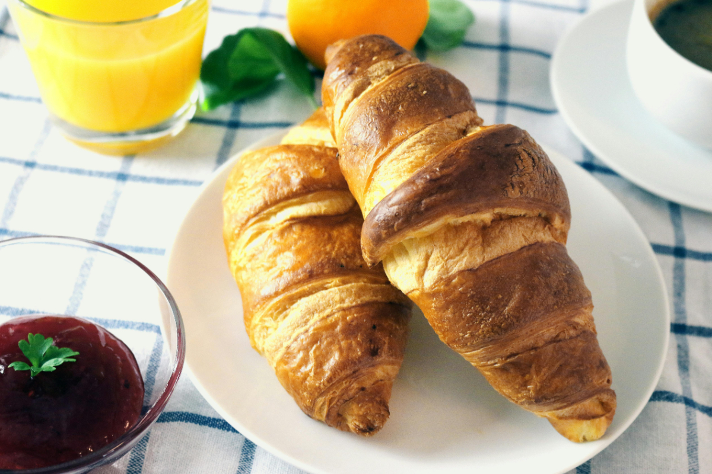
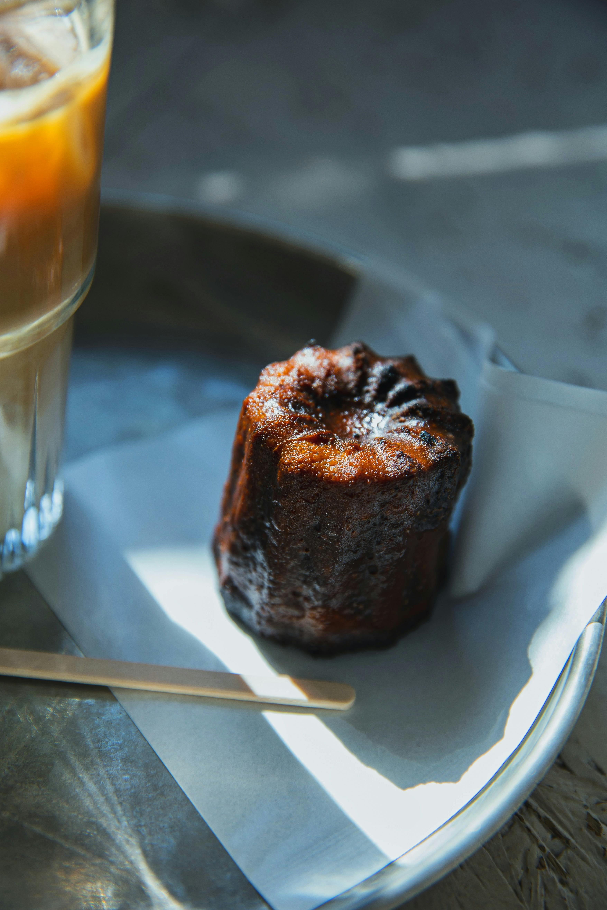
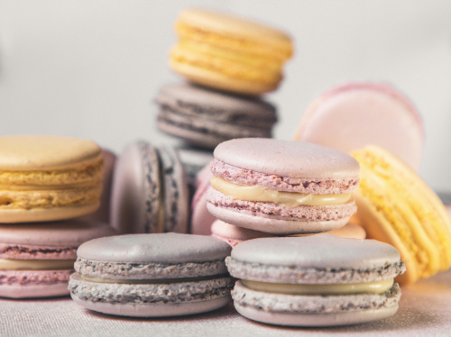
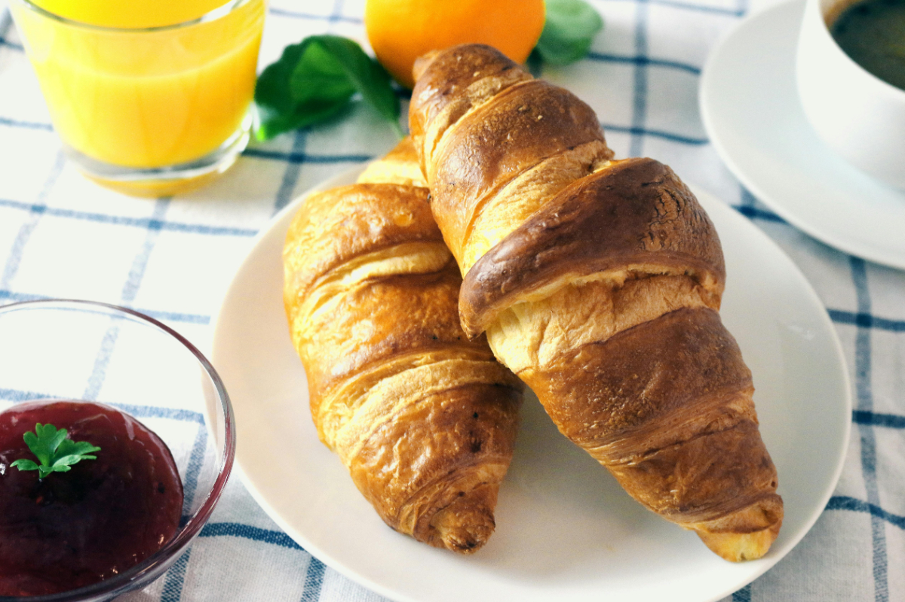
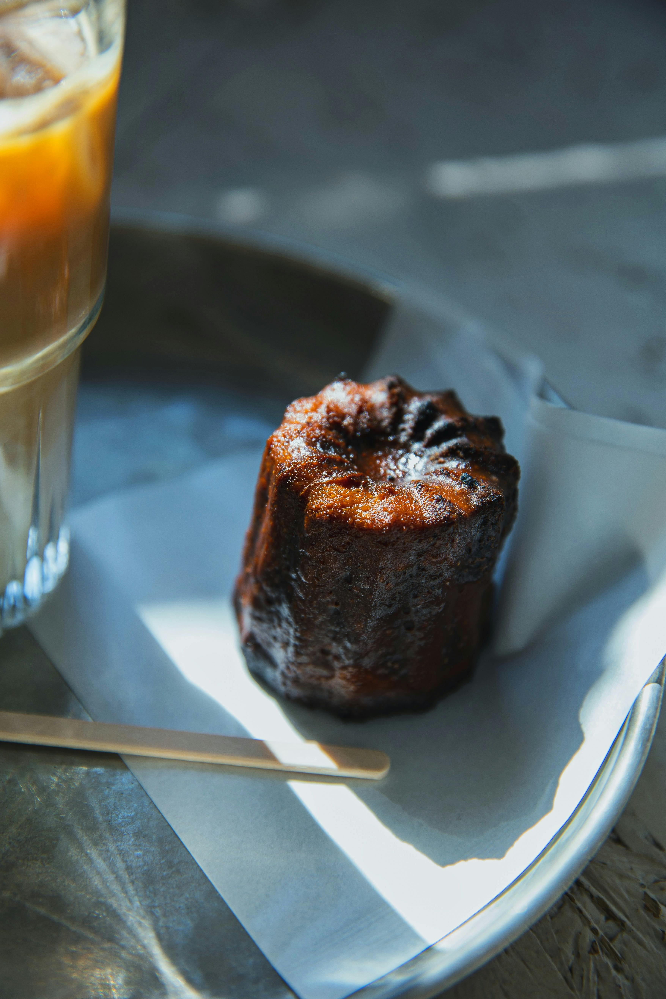
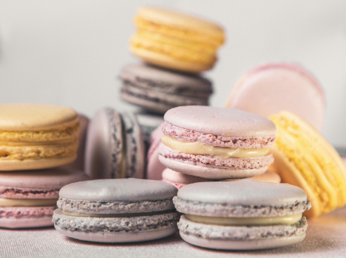

クロワッサン
クロワッサンは、フランス語で「三日月」を意味し、バターを折り込んだ生地を何層にも重ねて焼き上げたパンのことです。
カヌレ
カヌレは、フランスのボルドー地方発祥の伝統的な焼き菓子です。正式名称は「カヌレ・ド・ボルドー」といい、カヌレとはフランス語で「溝のある」という意味で、その名の通り、表面に溝のある独特の形が特徴です。
マカロン
マカロンは、卵白・砂糖・アーモンドを主な材料と焼き菓子の一種です。形状は、直径数センチメートルの円盤を２枚重ねた形をしています。
クロワッサンは、フランス語で「三日月」を意味し、バターを折り込んだ生地を何層にも重ねて焼き上げたパンのことです。
カヌレは、フランスのボルドー地方発祥の伝統的な焼き菓子です。正式名称は「カヌレ・ド・ボルドー」といい、カヌレとはフランス語で「溝のある」という意味で、その名の通り、表面に溝のある独特の形が特徴です。
マカロンは、卵白・砂糖・アーモンドを主な材料と焼き菓子の一種です。形状は、直径数センチメートルの円盤を２枚重ねた形をしています。
